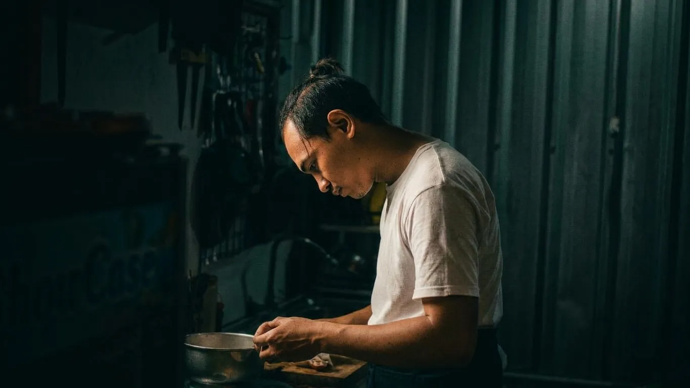
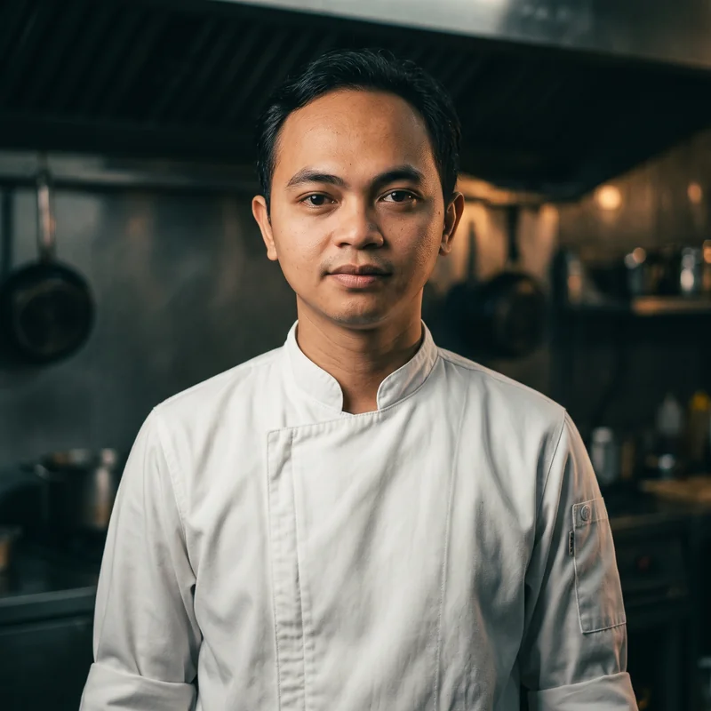
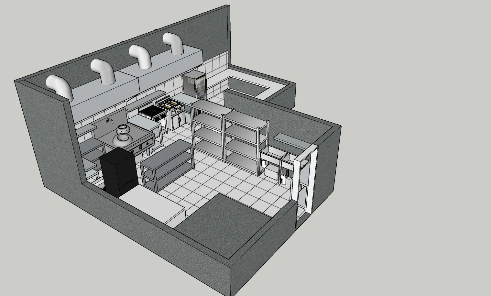
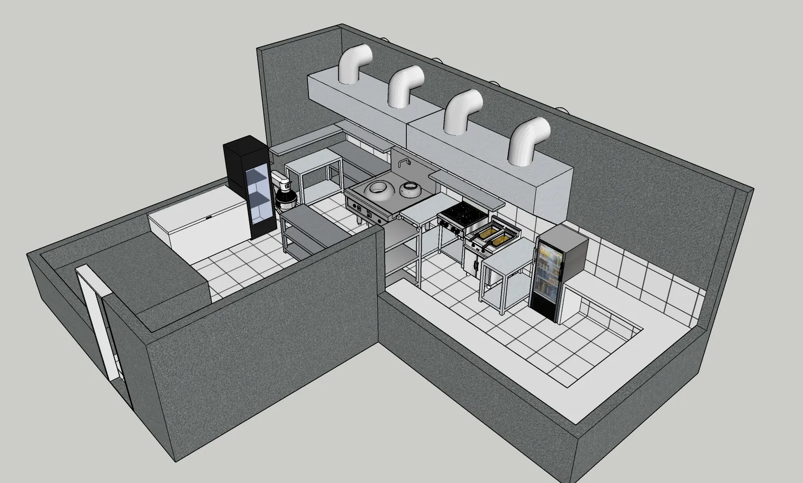
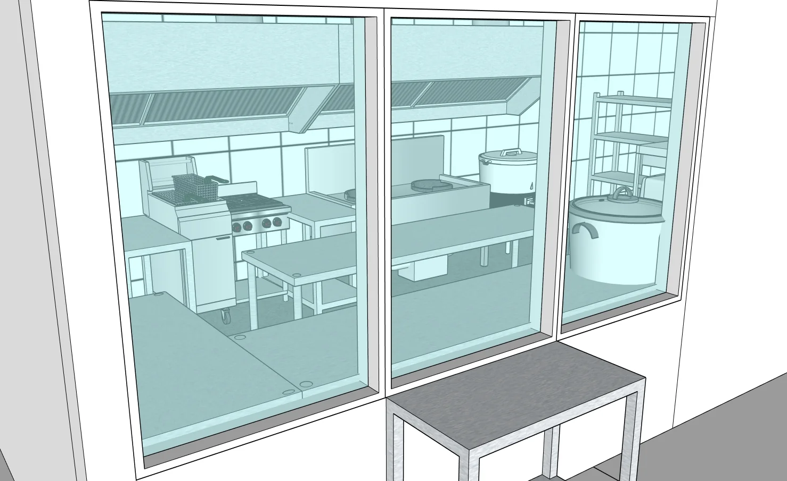
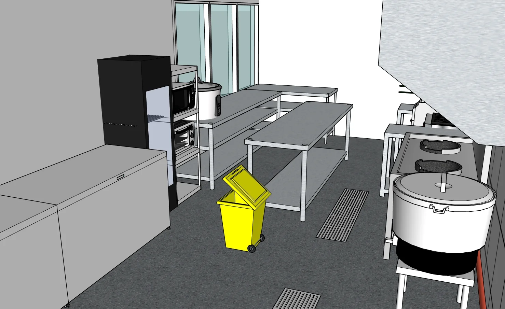
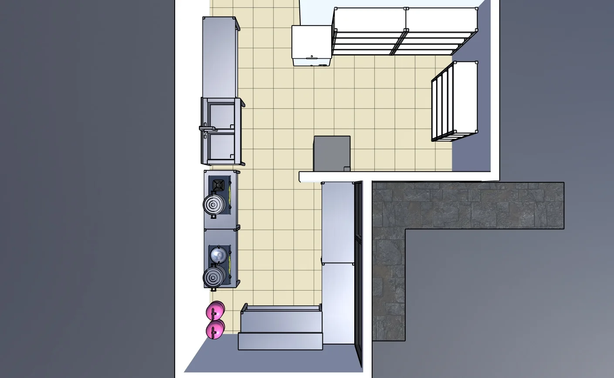
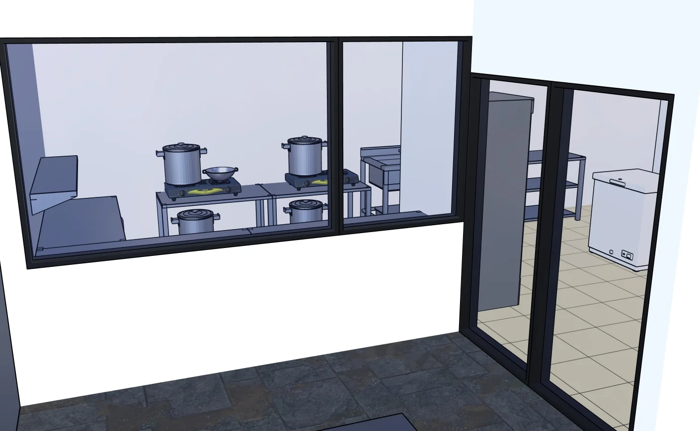

01
Concept & Business Planning
From idea to a clear F&B concept for your restaurant or coffee shop.
Yanuar Ahmad · F&B Consultant

I help first-time owners open restaurants and coffee shops that run smoothly and make sense on the numbers: concept, menu, kitchen layout and bookkeeping, built for your team to run.
Kitchen layout work for Bumee Kitchen, Todea and Tumpang Bu Genuk.
I learned the business from the floor up.


Before advising owners, I carried plates, worked the line and ran my own business, so I know what a Friday-night rush does to a plan. Every recommendation I make has to survive a real service, a real budget and a real team.
Western–Japanese fusion menus. I am testing how Western technique and Japanese flavours can sit together on one menu, in dishes a real kitchen can repeat every service.
Developing and testing dishes that bring Western technique and Japanese flavours together.
Financial records that are clear, easy to access, and simple for the whole team to work with.
From the dish pit to the consulting table: every step taught me something I now use with clients.
I started with the unglamorous work: cleaning, prep, and watching how every small task affects service.
On the line, I learned the relationship between a good menu, smart prep, clear stations, and a calm team.
In 2021, I put those lessons to the test, opening and operating a business where every decision carried real cost.
In 2022, I helped my first client turn a promising idea into an operation their team could confidently run.
There is no one-size-fits-all checklist. I work with your business, budget, site, and timeline, toward an opening you can actually run.
We make the idea tangible: your guest, the location, your budget, and what success should look like in the first year.
I turn the concept into decisions: menu direction, equipment priorities, costs, workflow, and an opening sequence.
We build the operating tools and team habits that make the plan usable from day one, not just impressive on paper.
I stay close through the first services, helping you notice what needs to be adjusted while there is still room to improve.
The groundwork behind a business people come back to.
From idea to a clear F&B concept for your restaurant or coffee shop.
Menu development, with Western–Japanese fusion as my current focus.
Practical kitchen layouts that support a smooth workflow.
Transparent bookkeeping that is easy to access and easy to work with.
Simple standards your team can follow every day.
Hands-on help in the weeks before you open.
Let’s talk about your idea.
Menu creations and kitchen layouts, from first idea to finished plate.

Isometric 3D layout of the whole kitchen.

Alternative L-shaped cooking line.

3D view through the kitchen windows.

Interior view with chillers and a stockpot burner.

Top-down plan with equipment along the walls.

View through the pass-through window.
Bring me in before the small decisions become expensive ones.
Tell me what you are building, where you are in the process, and what is keeping you up at night. This opens WhatsApp with your message ready to send.